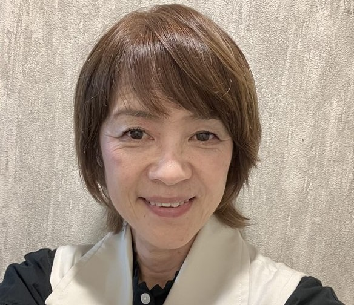
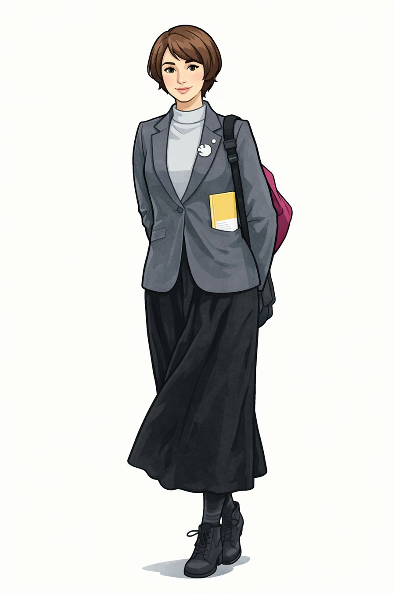

活動報告10号を公開
X（旧Twitter）にて活動報告10号を公開しました。ぜひご覧ください。
続きを見る →
ながつか はなえ
地域から日本を変える。
はなちゃん、全力前進！
| 生年月日 | 1966年5月16日（おうし座） |
|---|---|
| 資格 | ハラスメントカウンセラー＆アドバイザー 英会話塾 English Rainbow 経営 |
| 趣味 | 英会話・三味線・モトクロス・バイクツーリング・DIY・動物飼育 |
| 連絡先 | hakkyna@mineo.jp |
行政が進める施策を議会での質問・提言を通じてサポートし、実現に向けて後押ししてきた取り組みです。
子育て世帯の負担軽減を議会で継続的に取り上げ、行政の取り組みをサポートしました。
猛暑の中での安全な学習環境づくりを議会で質問し、整備の実現を後押ししました。
市民が手続きしやすい市役所をめざして提言。行政のDX推進をサポートしました。
住民との丁寧な対話による合意形成を議会で求め、地域の安全強化をサポートしました。
有機農業の推進を議会で繰り返し取り上げ、市の公式事業としての立ち上げをサポートしました。
自主防災組織の重要性を議会で訴え、地域ぐるみの防災体制づくりをサポートしました。
子供たちの未来を見据えた教育の充実を提言し、本格的なプログラミング教育の導入をサポートしました。
グローバル人材育成に向けた英語教育の強化を訴え、教員増員と体験型学習の導入をサポートしました。
不登校の子供たちが通いやすい環境づくりを議会で求め、南部地域への分室設置をサポートしました。
結城市議会での一般質問の記録です。2023年6月より毎回質問しています。
市民が利用するアクロスの天井改修工事について、工事の進捗状況・アスベスト対応・今後の取り組みを質問。市民の安全を最優先に進めるよう訴えました。
新設が計画されている消防署について、設置場所の選定理由と地域住民との合意形成プロセスを質問。市民の声が反映された安全なまちづくりを求めました。
結城市の有機農業の取り組み状況と今後のビジョンを質問。地域の農産物を活かした地産地消・学校給食への導入など、結城市ならではの農業政策の推進を訴えました。
TEAM HANA CHAN は、結城をもっと元気にしたい仲間が集まっています。
あなたの想いを、ぜひ一緒に形にしましょう！
🏛 代表・結城市市議会議員
ハラスメントカウンセラー＆アドバイザー。英会話塾 English Rainbow 経営。

🤖 デジタルサポーター
AIが生み出した、もうひとりのはなちゃん。デジタルの力で活動を応援します！
日々の活動の様子をお届けします。クリックで拡大できます。
世界に誇れる日本を、地域から！
地域で育てたものを地域で消費する。結城の農産物や特産品を活かし、地元経済を元気にします。
地域に根ざした力を育て、結城市が自立して輝けるまちづくりを推進します。
子供たちと若い世代が夢を持って育ち、次のまちの担い手になれる環境を整えます。
住んでいてよかった、
戻ってきたい、
ずっと住みたい町 ―― 結城市
生活を直撃する物価高に対し、市民の負担を少しでも和らげるための政策を推進します。
市の財政を市民の目線でしっかりとチェックし、税金が正しく使われているかを見守ります。
地域のイベントや活動に住民が参加しやすい環境づくりを支援し、まちの活力を高めます。
結城市が誇る伝統と文化を次世代につなぐため、保存・継承の取り組みを積極的にサポートします。
永塚英恵（ながつか はなえ）は茨城県結城市の市議会議員です。地産地消・ローカルパワーの強化・新世代育成を掲げ、結城市のまちづくりに全力で取り組んでいます。英語塾経営、ハラスメントカウンセラー、有機農業など幅広い経験を持ちます。
メール（hakkyna@mineo.jp）、X（旧Twitter）のDM（@hanafxr）、Facebookからご連絡いただけます。Zoomでの面談も受け付けています。このページのご意見・ご要望フォームからもお気軽にどうぞ。
結城市を「住んでいてよかった、戻ってきたい、ずっと住みたい町」にするため、3つの柱で活動しています。
TEAM HANA CHANではメンバーを募集中です。6月下旬のあじさい祭、8月中旬の盆踊りへの参加サポートをしてくださる方を歓迎しています。学生・主婦・シニア・会社員、どなたでも大歓迎です。お問い合わせフォームからご応募ください。
広島県三原市で生まれ育ち、小学校から高校まで地元の公立学校に通いました。大好きな動物の勉強をするため北海道酪農学園大学に進学。卒業後はニューヨークへ語学留学し、2015年にも再び留学。英検準1級・TOEIC 800点を取得。英語は今も私の人生の大切なパートナーです。
大学卒業後は栃木県の企業グループで営業・貿易を担当。その後、大型自動車免許を取得してトラック運転手・送迎バス運転手も経験。調理師免許を取得して病院食の調理師として働き、自動車板金塗装業にも携わりました。英語の趣味が高じて、大手英語学園の講師や大手フランチャイズのホームティーチャーも務めてきました。
結城市で英語塾「English Rainbow」を主宰し、英語・英会話・テスト対策・中学数学の基礎を指導。キッズプログラミングのインストラクターも務め、地域の子供たちと向き合ってきました。現在は議員活動に専念するため休止中ですが、近日再開予定です。
ハラスメントに悩む方々の相談に応じ、職場や地域での問題解決をサポートしています。
農家としての資格を取得し、有機農業の研究を進めています。目指すのは、結城の土地で育てた有機野菜を活かした地域特産品の開発。地域の恵みを、地域の力に変えていく「ローカルパワー」を自らの手で実践しています。
市議会議員として4年目を迎えました。まだまだ猛勉強中ですが、市民の皆さんの声を政治に届けるため、毎日全力で取り組んでいます。
「私にも、できるかもしれない」― その小さな気づきが、今ここに繋がっています。
正直に申し上げると、つい最近まで私は政治に無関心でした。「自分が参加しても何も変わらない」――そう思い込んで、目をそらして過ごしていました。きっと、多くの方が同じ気持ちではないでしょうか。
転機は、英語の勉強のために聞き始めた海外メディアでした。ダイナミックに動くアメリカ政治を追ううちに、ふと立ち止まったのです。「――では、日本は？私たちの町はどうなっているの？」その問いが、私の出発点でした。
女性リーダー育成の特別講座に応募して合格し、永田町での実践的な研修を経て、地方政治へ踏み出す覚悟が固まりました。地元では小学校のバレーボールコーチを8年間、英語講師を9年間続け、たくさんの子供たち・子育て世代の方々と向き合ってきました。
結城を、もっと元気に。
子供たちに、もっと希望を。
未来に、もっと可能性を。
永塚 英恵 ― 地域の声を、政治へ